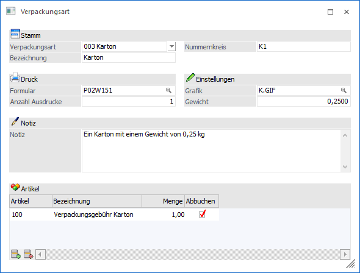
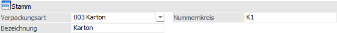
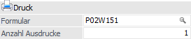
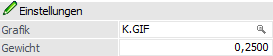
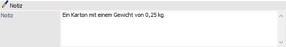
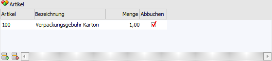
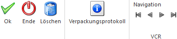

Über den Menüpunkt…
1 WinLine FAKT
1 Stammdaten
1 Verpackung
1 Verpackungsart
… können die verschiedenen Verpackungsarten verwaltet werden.

Es können folgende Stammdaten erfasst werden:
Stamm

Ø Verpackungsart
Soll eine neue Verpackung angelegt werden, so ist der Eintrag "Neueingabe" auszuwählen. Ansonsten kann man sich - ausgewählt aus der Auswahllistbox - bereits angelegte Verpackungen anzeigen lassen. Die Verpackungsart wird mit einer 3-stelligen Nummer mit führenden Nullen gespeichert.
Ø Bezeichnung
In der Bezeichnung kann ein Name für die Verpackung vergeben werden.
Ø Nummernkreis
Der Nummernkreis ist ein freier Text, der zum Aufzählen der Verpackungsnummer verwendet wird.
Druck

Ø Formular
In diesem Feld wird jenes Formular hinterlegt, das zum Etikettendruck herangezogen werden soll. Wie zum Beispiel die Formulare P02W151 und P02W151H aus der WinLine Demoinstallation.
Hinweis
Es ist möglich das Formular für den Lieferscheindruck automatisch austauschen zu lassen. Dieses kann über die Belegart (WinLine FAKT - Stammdaten - Belegstammdaten - Belegart - Register "Belegdruck") gesteuert werden.
Ø Anzahl Ausdrucke
Hier wird hinterlegt, wie viele Ausdrucke der Etiketten angefertigt werden sollen. Damit dieses funktioniert muss mit einem Formular gearbeitet werden, welches ein SUB-Formular enthält, wie zum Beispiel das Formular P02W151H aus der WinLine Demoinstallation.
Einstellungen

Ø Grafik
Hier kann eine Grafik ausgewählt werden, die dann im Menüpunkt "Kommissionierung" bei der entsprechenden Verpackung angezeigt wird.
Ø Gewicht
Gewicht der Verpackung (Tara)
Notiz

Ø Notiz
Das Feld Notiz kann dafür genutzt werden, dass nähere Informationen zu dieser Verpackung eingegeben werden können. Die Notiz ist für den Andruck bestimmt. Das heißt, sie kann in allen Listen, in denen die Verpackungsarten (T123) geladen sind, mit angedruckt werden.
Tabelle "Artikel"

In dieser Tabelle können Artikel hinterlegt werden, die automatisch beim Lieferscheindruck in den Beleg eingefügt werden.
Ø Artikel
In der Spalte "Artikel" werden die Artikel hinterlegt, welche beim Lieferscheindruck eingefügt werden sollen.
Ø Bezeichnung
An dieser Stelle wird die Bezeichnung des Artikels ausgewiesen.
Ø Menge
In der Spalte "Menge" wird die Menge des Artikels (für die Übernahme in den Lieferschein) definiert.
Ø Abbuchen
Die Option "Abbuchen" bestimmt, ob beim Belegdruck der Lagerstand des Artikels verändert wird.
Tabellenbuttons

Ø Zeile einfügen
Mit Hilfe des Buttons "Zeile einfügen" kann eine neue Artikelzeile hinzugefügt werden.
Ø Zeile entfernen
Durch Anwahl des Buttons "Zeilen entfernen" wird die markierte Artikelzeile aus der Tabelle entfernt.
Ø Ausgabe Excel
Durch Anwahl des Buttons "Ausgabe Excel" wird der Inhalt der Tabelle an Microsoft Excel übergeben.
Ø Tabelleneinstellungen speichern
Die Spalten einer Tabelle können grundsätzlich an beliebige Positionen verschoben, bzw. in der Breite entsprechend angepasst werden. Durch Anwahl des Buttons "Tabelleneinstellungen speichern" werden die Einstellungen benutzerspezifisch gespeichert und bei dem nächsten Aufruf des Programmpunktes wieder vorgeschlagen.
Ø Gesamteinstellungen speichern
Im Gegensatz zu "Tabelleneinstellungen speichern" können mit "Gesamteinstellungen speichern" mehrere Tabellenaufbauten gespeichert und nach Wunsch geladen werden. Zusätzlich werden Sonderfunktionen der Tabelle (z.B. "Spalte gruppieren") ebenfalls bei der Speicherung bedacht.
Buttons

Ø Ok
Durch Anwahl des Buttons "Ok" bzw. der Taste F5 wird die Verpackungsart gespeichert.
Ø Ende
Bei Anwahl des Buttons "Ende" bzw. der Taste ESC wird das Fenster geschlossen und alle nicht gespeicherten Änderungen verworfen.
Ø Löschen
Mit Hilfe des Buttons "Löschen" können bestehende Verpackungsarten, welche nicht verwendet werden, gelöscht werden.
Ø Verpackungsprotokoll
Durch Anwahl des Buttons "Verpackungsprotokoll" wird ein Verpackungsprotokoll für die aktuelle Verpackungsart am Bildschirm ausgegeben.
Ø Navigation (VCR)
Über die so genannten VCR-Buttons kann durch Mausklick zwischen den Datensätzen geblättert werden.
ü  Damit kann der
erste Datensatz angesprochen werden.
Damit kann der
erste Datensatz angesprochen werden.
ü  Damit kann der
vorherige Datensatz angesprochen werden.
Damit kann der
vorherige Datensatz angesprochen werden.
ü  Damit kann der
nächste Datensatz angesprochen werden.
Damit kann der
nächste Datensatz angesprochen werden.
ü  Damit kann der
letzte Datensatz angesprochen werden.
Damit kann der
letzte Datensatz angesprochen werden.